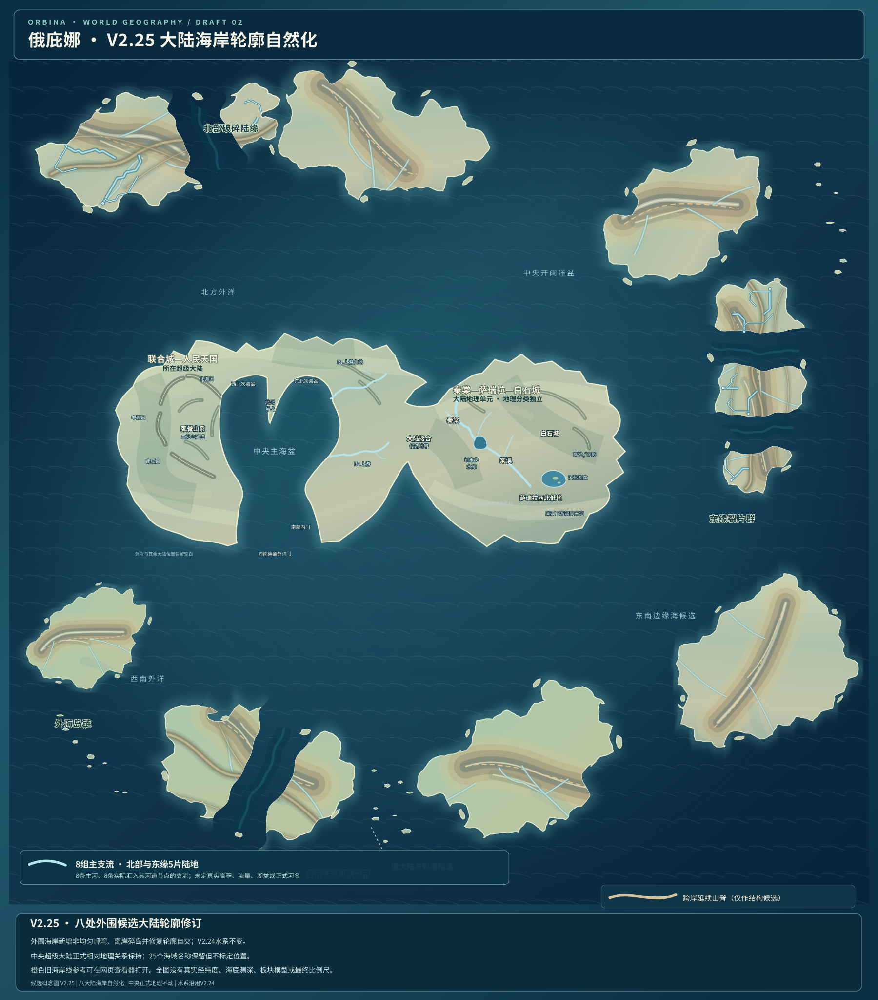

50%
左侧为 V2.25 新轮廓右侧为 V2.24 原轮廓

本轮修改的边界
- 八处外围大陆候选线进行宏观凹湾、凸岬修订；并修复原候选路径的16个几何自交。
- 增加39座可独立编辑的近岸碎岛候选，不强行把所有大陆连成单一完整陆块。
- 仍然沿用 V2.24 的八组主支流及既有山脊、旧河网对照层，中央正式水系与已确认的国家相对位置不动。
- 新海岸与岛屿只是地图形态试绘：尚未建立海底地形、海平面演变、海岸岩性、实测高程和板块模型；需人工检查岛距及河口连续性。
在 V2.24 河网基线上，仅为外围八处候选陆块增加有区别的湾岸、岬角与碎岛。中央正式相对地理不改动。
